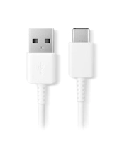
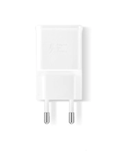
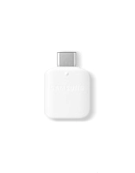
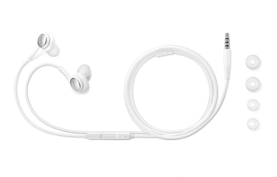

Samsung Galaxy S10
Das infinity-O Display, welches mit einer Dynamic AMOLED-Technologie, ausgestattet ist sorgt für ein spannendes Multimediaerlebniss.
Das Handy ist mit Fotoassistenten und Action Cam-Videostabilisierung, für Proffesionelle Aufnahmen, ausgerüstet.
Außerdem hat das samsung ein Wireless PowerShare zum kabellosen teilen von Energie, mit kompatieblen Handys
Hohe sicherheit des Handys wird mit dem Ultraschall-Fingerabdruckscanner gewährleistet.
In den Lieferungen des Samsung s10 mit dabei sind:
-Datenkabel

-Ladeadapter

-Steckplatzwerkzeug
-USB-Adapter

-AKG-Kopfhörer 